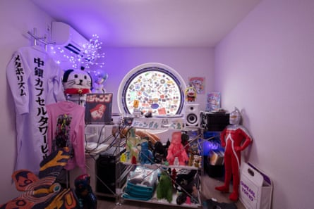

L ooking like a teetering stack of washing machines perched on the edge of an elevated highway, the Nakagin Capsule Tower was an astonishing arrival on the Tokyo skyline in 1972. It was the heady vision of Kisho Kurokawa , a radical Japanese architect who imagined a high-rise world of compact capsules, where people could cocoon themselves away from the information overload of the modern age. These tiny pods would be “a place of rest to recover”, he wrote, as well as “an information base to develop ideas, and a home for urban dwellers”. Residents could peer out at the city from their cosy built-in beds through a single porthole window, or shut it all out by unfurling an elegant circular fan-like blind, all while remaining connected with the latest technology at all times.
Launched to critical acclaim, the Nakagin tower’s 140 capsules quickly sold out, and became highly sought after by well-heeled salarymen looking for a place to crash when they missed the last train home. Never intended to be full-time housing, the pods came stuffed with mod cons: en suite bathroom, foldout desk, telephone and Sony colour TV. But, 50 years on, after a prolonged lack of maintenance and repairs, and disagreements among owners about its future, the asbestos-riddled building was finally disassembled in 2022. The creaking steel capsules of Kurokawa’s space-age fantasy were unbolted and removed from the lift and stair towers, pod by pod.
Now, three years on, a little piece of his dream is back. After a meticulous process of conservation, people will soon be able to get a glimpse of life in one of these sci-fi capsules, thanks to a new exhibition at the Museum of Modern Art in New York. MoMA acquired a unit in 2023, one of 14 capsules that were carefully restored to their original condition, with oversight from Kurokawa’s office, after the tower was disassembled. “The Nakagin Capsule Tower is one of the world’s most written about works of modern architecture,” says MoMA curator Evangelos Kotsioris. “But the many lives of the building, and its residents, have rarely been told.”
‘Office, studio, hotel, home, conference room, or urban villa’ … interior view.Photograph: © Noritaka Minami
He and co-curator Paula Vilaplana de Miguel have pieced together an immersive display that tells the full story of the project in all its facets, from conception to marketing to unexpected afterlife. There will be a wealth of ephemera, from the building’s only surviving sales brochure, to the original promotional film for the tower, alongside video interviews with former residents, and an explorable digital model of the entire building. And of course, there’s the capsule itself, visible in all its freshly white-painted glory through the window of MoMA’s street-level gallery. The museum’s retractable glass facade was opened up for the first time to get it in.
Peek through the pod’s porthole window and you will find a streamlined white world that could have been lifted from 2001: A Space Odyssey. A reel-to-reel tape recorder shines out from an angled wall panel, next to a sleek radio receiver and built-in rotary phone, beneath a Sony Trinitron TV. A bright red Olivetti typewriter perches on a fold-down desk, alongside a Sharp electronic calculator – one of the cutting-edge features included in the “super-deluxe” capsule model.
“Just as there is a full range of automobiles, from sedans to coupes to sports cars,” Kurokawa explained in the sales brochure, “a capsule house can serve numerous purposes – mini-office, studio, hotel, home, conference room, or urban villa – based on the equipment selected.”
Media-savvy salesman … Kurokawa in front of the completed tower in 1974.Photograph: Tomio Ohashi
Kurokawa was the youngest founding member of the Metabolist movement , a group of Japanese architects formed in 1960 that fused ideas about megastructures with those of organic biological growth. They imagined a networked world of interconnecting modular structures that could multiply and spread across the planet like a great branching fungus. But, unlike many of his contemporaries who struggled to communicate effectively with clients and the public through the usual clouds of architectural jargon, Kurokawa was a media-savvy salesman.
He produced a sizzling manifesto, The Capsule Declaration, illustrated with Airstream trailers and Nasa space capsules, amniotic sacs and coffins, arguing that “the capsule transcends human and device”. He imagined a seductive plug-and-play future, where capsules could be adapted, expanded and replaced as societal needs changed, presenting a new kind of architecture capable of growth and transformation through “metabolic cycles”. In 1970, he published a punchy magazine-like book, which came with a striking fold-out orange and pink poster and a 7-inch vinyl recording of his computerised voice reading out his manifesto. On seeing this, as well as Kurokawa’s capsule installation at the Osaka Expo the same year, the Nakagin development company was sold.
Their sales pitch for the “capsule manshon” – a term for high-end apartment buildings – was expounded in a glossy brochure designed like a car catalogue. It included dashing cutaway illustrations of the 10 square metre capsules, drawn by a car magazine illustrator, suggesting that life in one of these pods would be just as thrilling as driving a sports car. The construction company, Taisei, made a 25-minute film, with actors performing a glamorous day in the life of the tower, while buyers were even gifted a lamp in the shape of a building. The marketing worked. Despite their small size, the capsules sold for around 50% more per square metre than the average apartment.
The only surviving wooden model of the project will be on show in the exhibition, and attentive visitors will notice that it includes a second capsule tower. Such was the initial sales success, Nakagin started planning a twin complex across the road, to be connected to the first by a raised plinth, as well as towers for several other sites across the city. But their timing couldn’t have been worse. The 1973 international oil crisis saw construction costs soar – and Kurokawa’s capsule dreams evaporate. Still, the first tower remained a success for the next 15 years. Its neighbourhood, Ginza, boomed into a bustling business district, while the capsule prices were ever-inflated by the 1980s bubble economy. Kurokawa, meanwhile, would continue pursuing his penchant for pods elsewhere, building the world’s first capsule hotel in Osaka in 1979, which spawned a wave of similar micro-hotels across Japan.
Meticulously restored … the MoMa’s capsule.Photograph: Jonathan Muzikar/The Museum of Modern Art, New York, and the Nakagin Capsule Tower Preservation and Restoration Project, Tokyo
But the Nakagin tower wouldn’t be repeated. Like a giant pixelated bar chart, it reflected the country’s fortunes: when the bubble burst in the early 1990s, so the capsules started to crumble. Residents moved out, maintenance funds dwindled, and rainwater pooling on the capsules’ flat roofs caused extensive corrosion.
Kurokawa had always intended that the pods would be replaced after 25 years, to respond to changing needs. But a crucial design flaw made it impossible to remove them individually without first removing every capsule above. Besides, any attempt to refurbish would have required the prohibitively expensive removal of the asbestos insulation. Lured by the value of the site for redevelopment, the individual pod owners voted by majority to sell the building for demolition in 2007, just a few months before Kurokawa died.
“Many people see the Nakagin tower as a failed utopian project,” says Kotsioris, but it actually stood for a relatively long time, in terms of Japan’s throwaway building culture. “When buildings in Tokyo had an average lifespan of 15 to 20 years, the fact that it stood for 50 years makes it a resounding success.”
‘Like a traumatic memory’ … Wakana Nitta (AKA Koe-chan) in the capsule she uses as a DJ booth.Photograph: Courtesy Tatsuyuki Maeda / The Nakagin Capsule Tower Preservation and Restoration Project, Tokyo, Japan
As it turned out, the building’s final years were some of its most vibrant. It won a 15-year reprieve when, after the 2007 financial crisis, the developer that had agreed to acquire the site unexpectedly filed for bankruptcy. Takayuki Sekine, a retired chamber of commerce manager, and his wife, Yumiko, bought a capsule when demolition was already on the cards, and spent every weekend in it. “After I started my blogposts, my articles attracted many readers here,” Takayuki recalls in a video interview. “Some enthusiasts started living here, with many more people joining in. And we had so much fun, with drinking parties at night.”
In another video, a DJ called Koe-chan explains how she spotted the tower from the highway. “It stuck with me like a traumatic memory,” she recalls, and she was compelled to acquire a capsule for live-streaming her DJ sets. Others used their pods as offices or libraries, each customised to their new purpose, while the collective efforts to repair and maintain the leaky hulk brought the tower a real sense of community for the first time. “Ironically, the capsules were originally designed as protective wombs for isolation from the city,” says Kotsioris. “But in the end, they turned out to form a really sociable, neighbourly community.”
As for Kurokawa, he would no doubt be amused that some of his capsules have found new homes, scattered around cultural institutions and collections worldwideAfter all, he imagined a future where you might undock your capsule and take it with you across the ocean to pastures new.